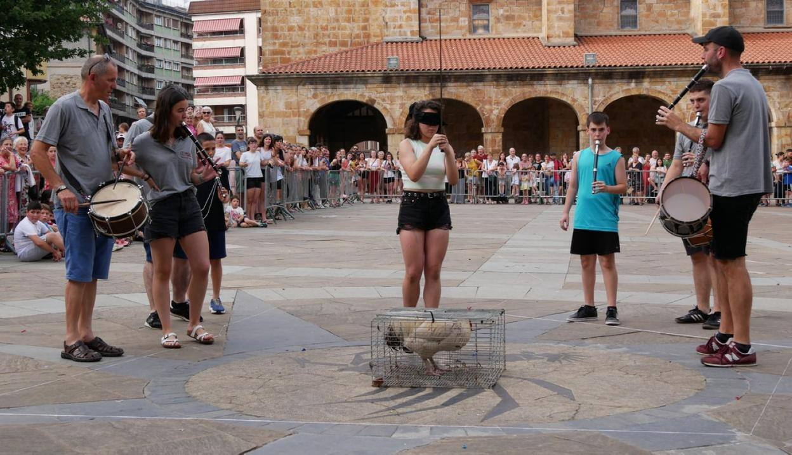

Fiestas
CABALGATA DE REYES
El día 5 de enero la Cabalgata de Reyes recorre las calles de Legazpi. A las 8 de la noche en la plaza se desarrolla el acto principal ante el Belen. Los reyes hacen su ofrecimiento, hay bailes, música,etc. Los últimos años Korosi dantza taldea se encarga de la organización de la Cabalgata.
Unos días antes se organiza una recogida de cartas en el espacio de la "Azoka".
CARNAVALES

En los últimos años los carnavales se celebran durante tres días: el viernes es el desfile de los colegios y a continuación es el día del disfraz libre con acompañamiento de una charanga.
El sábado es el día de la comparsa organizada por la Asamblea de jóvenes de Legazpi y el domingo llegan a nuestras calles los carnavales tradicionales de Euskal Herria de la mano del grupo de danzas Sustraiak con una comparsa popular.
Fiestas Patronales de Legazpi "Santikutzak"
Nuestro día festivo local se celebra el 3 de mayo y rememoran los acontecimientos ocurridos en Mirandaola. Son unas fiestas populares que las asociaciones deportivas y culturales organizan junto con el ayuntamiento. Comienzan las fiestas el día 30 de abril a la tarde y siguen los días 1, 2, 3 y 4 de mayo. El 4 de mayo, día de "Santikutz Txiki" , se celebrán los actos dependiendo de qué día de la semana toque. "Kapela dantza" solía ser el acto de Santikutz Txiki y los últimos años se ha solido realizar la víspera del día de Mirandaola. El domingo siguiente a este día de Santikutz txiki se celebra el día de Mirandaola y con él se terminan las fiestas.
Juego del gallo
 Este juego se realiza el día de la Octava del Corpus. Juego común en la antigüedad, hoy en día se conserva solo en Legazpi y parece que tiene el mismo origen que el antzar jokoa.
El juego consiste en llegar con los ojos tapados y por un camino marcado al lugar donde se ha instalado el gallo, al son de una música típica que interpretan los txistularis..